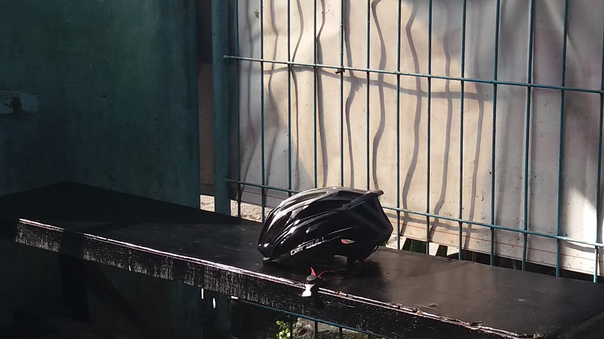

<!DOCTYPE html>
<html lang="en">
  <head>
    <!-- Required meta tags -->
    <meta charset="utf-8" />
    <meta name="viewport" content="width=device-width, initial-scale=1" />

    <!-- Bootstrap CSS -->
    <link href="https://cdn.jsdelivr.net/npm/bootstrap@5.1.3/dist/css/bootstrap.min.css" rel="stylesheet" integrity="sha384-1BmE4kWBq78iYhFldvKuhfTAU6auU8tT94WrHftjDbrCEXSU1oBoqyl2QvZ6jIW3" crossorigin="anonymous" />
    <!-- css -->
    <link rel="stylesheet" href="style.css" />
    <title>portfolio I NOVALRMDHN</title>
  </head>
  <body id="profile">
    <script src="https://cdn.jsdelivr.net/npm/bootstrap@5.1.3/dist/js/bootstrap.bundle.min.js" integrity="sha384-ka7Sk0Gln4gmtz2MlQnikT1wXgYsOg+OMhuP+IlRH9sENBO0LRn5q+8nbTov4+1p" crossorigin="anonymous"></script>
  </body>
</html>
<!-- navbar -->
  <nav class="navbar navbar-expand-lg navbar-dark fixed-top fw-bold" style="background-color:#323639">
  <div class="container">
    <a class="navbar-brand display-6 ml-6 fw-bold href="#">MY PORTFOLIO</a>
    <button class="navbar-toggler" type="button" data-bs-toggle="collapse" data-bs-target="#navbarNav" aria-controls="navbarNav" aria-expanded="false" aria-label="Toggle navigation">
      <span class="navbar-toggler-icon"></span>
    </button>
    <div class="collapse navbar-collapse" id="navbarNav">
      <ul class="navbar-nav ms-auto">
        <li class="nav-item">
          <a class="nav-link active" aria-current="page" href="#">PROFILE</a>
        </li>
        <li class="nav-item">
          <a class="nav-link" href="#MY PHOTOGRAPH">MY PHOTOGRAPH</a>
        </li>
       
        <li class="nav-item">
          <a class="nav-link" href="#ABOUT">ABOUT</a>

          <li class="nav-item">
            <a class="nav-link" href="#CONTACT">CONTACT</a>

        </li>
        
        </li>
      </ul>
    </div>
  </div>
</nav>

<!-- end -->


<!-- jumbotron -->
<section class="jumbotron text-center mt-6">
  <div class="container">
  
    
  <h1 class="display-1 fw-bold text-light text-center">noval ramadhan</h1>
  <p class="text-center text-light padding-top-7"><i class="bi bi-circle-fill"></i></p>
  <p class=" fw-bold text-light text-center">_____________________</p>
  <p class="lead display-6  fw-bold text-light text-center">student | photographer</p>
  </div>
  </div>
</section>
<!-- jumbotron end -->


<!-- my project section -->
<section id="MY PHOTOGRAPH">
  <div class="container mt-5">
    <div class="row text-center">
      <div class="col">
        <h2 class="fw-bold text-light">my fotograph</h2>
        <p class="fw-bold text-light">______________________________________________</p>
      </div>
    </div>
    <div class="row">
      <div class="col-md-4 mb-4">
        <div class="card">
          
          <div class="card-body">
            <p class="card-text fw-bold">1.contoh diatas adalah fotografi human interest photography, Human interest photography
              Genre ini merupakan aliran fotografi yang menggunakan manusia sebagai objek utamanya. Dalam aliran tersebut, sang fotografer akan berusaha mendapatkan sisi kehidupan dan interaksi manusia dengan lingkungan sekitarnya. Selain itu, sang fotografer juga berusaha membangkitkan empati orang-orang yang melihatnya lewat momen-momen yang dibidiknya.</p>
          </div>
        </div>
      </div>
      <div class="col-md-4 mb-4">
        <div class="card">
          
          <div class="card-body">
            <p class="card-text fw-bold">2. Fotografi Periklanan
              Dalam fotografi periklanan ini memerlukan hasil fotografi yang unik dan terkesan eye catching. Ini artinya fotografer bisa memainkan berbagai jenis fotografi, seperti fotografi glamor dan fotografi makro.</p>
          </div>
        </div>
      </div>
      <div class="col-md-4 mb-4">
        <div class="card">
          
          <div class="card-body background-color">
            <p class="card-text fw-bold">3.Landscape photography
              Jalan-jalan ke pantai maupun gunung tidak lengkap rasanya jika  tidak mengabadikan pemandangan yang tersaji. Nah, kamu bisa mengabadikan pemandangan itu dengan menggunakan aliran fotografi ini. Supaya hasilnya semakin bagus, cari momen yang tepat untuk diabadikan. Misalnya, saat matahari terbit atau tenggelam..</p>
          </div>
        </div>
      </div>
    </div>

      
</section>


<!-- end project section -->


<div class="mt-4"></div>


<!-- about -->
<section id="ABOUT">
  <div class="container">
    <div class="row text-center text-uppercase">
      <div class="col text-light mt-4">
        <h2>about</h2>
        <p class="text-light fw-bold fs-3">me</p>
        <p class="texk-light fw-bold">_________________________________________</p>
      </div>
    </div>
  </div>
  <div class="row justify-content-center ">
    <div class="col-md-3  fs-3 text-light ">
      <p>perkenalkan nama saya noval ramadhan saya dari smk infokom bogor dan saya adalah photographer pemula.</p>
    </div>
    <div class="col-md-3 fs-3 text-light mb-4">saya mulai mempelajari fotografi dari kelas 1 smp dengan hanya bermodalkan handphone.</div>
    <div class="col-md-3 fs-3 text-light">menurut saya fotografi adalah  seni dan penghasilan gambar dan cahaya pada film atau permukaan yang dipekakan.</div>
    
</section>
<!-- about end -->

<div class="mt-5"></div>
<!-- konten -->
<section id="CONTACT">
  <div class="container">
    <div class="row text-center text-light fw-bold">
      <div class="col">
        <h2>contact me</h2>
        <p>_____________________</p>
      </div>
    </div>
    <div class="row text-light mt-5 ml-6 justify-content-center">
      <div class="col-md-7 justify-content-center">
        <form>
          <fieldset disabled>
            <legend>put some message for me</legend>
            <div class="form-floating">
              <textarea class="form-control" placeholder="Leave a comment here" id="floatingTextarea2" style="height: 85px"></textarea>
              <label for="floatingTextarea2">Comments</label>
            </div>
              <div class="mt-3 justify-content-center">
                <P class="fw-bold text-light text-center">OR</P>
                <label for="social media" class=" form-label fw-bold fs-5"> MY SOCIAL MEDIA</label>
                
                <p>____________________________________________________________</p>
                <div class="row">
                  <div class="col">
                    <a href="https://wa.link/wwyuyp" target="_blank" class="text-center">
                      <svg xmlns="http://www.w3.org/2000/svg" width="200" height="200" fill="currentColor" class="bi bi-whatsapp" viewBox="0 0 16 16" id="IconChangeColor" data-darkreader-inline-fill="" style="--darkreader-inline-fill:currentColor;"> <path d="M13.601 2.326A7.854 7.854 0 0 0 7.994 0C3.627 0 .068 3.558.064 7.926c0 1.399.366 2.76 1.057 3.965L0 16l4.204-1.102a7.933 7.933 0 0 0 3.79.965h.004c4.368 0 7.926-3.558 7.93-7.93A7.898 7.898 0 0 0 13.6 2.326zM7.994 14.521a6.573 6.573 0 0 1-3.356-.92l-.24-.144-2.494.654.666-2.433-.156-.251a6.56 6.56 0 0 1-1.007-3.505c0-3.626 2.957-6.584 6.591-6.584a6.56 6.56 0 0 1 4.66 1.931 6.557 6.557 0 0 1 1.928 4.66c-.004 3.639-2.961 6.592-6.592 6.592zm3.615-4.934c-.197-.099-1.17-.578-1.353-.646-.182-.065-.315-.099-.445.099-.133.197-.513.646-.627.775-.114.133-.232.148-.43.05-.197-.1-.836-.308-1.592-.985-.59-.525-.985-1.175-1.103-1.372-.114-.198-.011-.304.088-.403.087-.088.197-.232.296-.346.1-.114.133-.198.198-.33.065-.134.034-.248-.015-.347-.05-.099-.445-1.076-.612-1.47-.16-.389-.323-.335-.445-.34-.114-.007-.247-.007-.38-.007a.729.729 0 0 0-.529.247c-.182.198-.691.677-.691 1.654 0 .977.71 1.916.81 2.049.098.133 1.394 2.132 3.383 2.992.47.205.84.326 1.129.418.475.152.904.129 1.246.08.38-.058 1.171-.48 1.338-.943.164-.464.164-.86.114-.943-.049-.084-.182-.133-.38-.232z" id="mainIconPathAttribute" fill="#ffffff" data-darkreader-inline-fill="" style="--darkreader-inline-fill:#575e61;"></path> </svg>
                    </a>
                  </div>

                    <div class="col-md-4">
                        <a href="mailto:novalramadhan423@gmail.com" target="_blank">
                          <svg xmlns="http://www.w3<a hr.org/2000/svg" width="198" height="198" fill="currentColor" class="bi bi-envelope" viewBox="0 0 16 16" id="IconChangeColor" data-darkreader-inline-fill="" style="--darkreader-inline-fill:currentColor;"> <path d="M0 4a2 2 0 0 1 2-2h12a2 2 0 0 1 2 2v8a2 2 0 0 1-2 2H2a2 2 0 0 1-2-2V4Zm2-1a1 1 0 0 0-1 1v.217l7 4.2 7-4.2V4a1 1 0 0 0-1-1H2Zm13 2.383-4.708 2.825L15 11.105V5.383Zm-.034 6.876-5.64-3.471L8 9.583l-1.326-.795-5.64 3.47A1 1 0 0 0 2 13h12a1 1 0 0 0 .966-.741ZM1 11.105l4.708-2.897L1 5.383v5.722Z" id="mainIconPathAttribute" filter="url(#shadow)"></path> <filter id="shadow"><feDropShadow id="shadowValue" stdDeviation="0.5" dx="0" dy="0" flood-color="black"></feDropShadow></filter></svg>
                    </div>
                   </div>
                  </div>
                </div>
                
                  
                  </div>
                  
                </a>
                </div>
                
                
               
              </div>
             
             
            </div>
            <div class="mb-3">
              
             
              </select> 
            </div>
              </div>
            </div>
            <div class="mb-3">
              
              
            
          </fieldset>
        </form>
      </div>
    </div>
  </div>
  <svg xmlns="http://www.w3.org/2000/svg" viewBox="0 0 1440 320"><path fill="#f3f4f5" fill-opacity="1" d="M0,0L14.1,32C28.2,64,56,128,85,138.7C112.9,149,141,107,169,96C197.6,85,226,107,254,138.7C282.4,171,311,213,339,213.3C367.1,213,395,171,424,154.7C451.8,139,480,149,508,165.3C536.5,181,565,203,593,213.3C621.2,224,649,224,678,197.3C705.9,171,734,117,762,96C790.6,75,819,85,847,117.3C875.3,149,904,203,932,197.3C960,192,988,128,1016,138.7C1044.7,149,1073,235,1101,245.3C1129.4,256,1158,192,1186,186.7C1214.1,181,1242,235,1271,213.3C1298.8,192,1327,96,1355,90.7C1383.5,85,1412,171,1426,213.3L1440,256L1440,320L1425.9,320C1411.8,320,1384,320,1355,320C1327.1,320,1299,320,1271,320C1242.4,320,1214,320,1186,320C1157.6,320,1129,320,1101,320C1072.9,320,1045,320,1016,320C988.2,320,960,320,932,320C903.5,320,875,320,847,320C818.8,320,791,320,762,320C734.1,320,706,320,678,320C649.4,320,621,320,593,320C564.7,320,536,320,508,320C480,320,452,320,424,320C395.3,320,367,320,339,320C310.6,320,282,320,254,320C225.9,320,198,320,169,320C141.2,320,113,320,85,320C56.5,320,28,320,14,320L0,320Z" style="--darkreader-inline-fill:#181a1b;" data-darkreader-inline-fill=""></path></svg>
</section>

<!-- konten end -->

<!-- icon bootstrap -->
<link rel="stylesheet" href="https://cdn.jsdelivr.net/npm/bootstrap-icons@1.9.1/font/bootstrap-icons.css">
<!-- end -->

<!-- footer -->
<footer class="bg-light fw-bolder text-center fs-3 pb-5">
  <p><i class="bi bi-circle-fill text-dark"></i> Fotografi hebat adalah tentang kedalaman perasaan, bukan kedalaman bidang.</p>
  <p><i class="bi bi-circle-fill text-dark"></i>  follow me on my <i class="bi bi-instagram">  instagram</i> <a href="https://www.instagram.com/novalrmdhn9/" class="text-dark">novalrmdhn9</a></p>
</footer>
<!-- footer end section -->
